import torchData Science for Electron Microscopy
Lecture 1: Introduction
Outline
Formalities
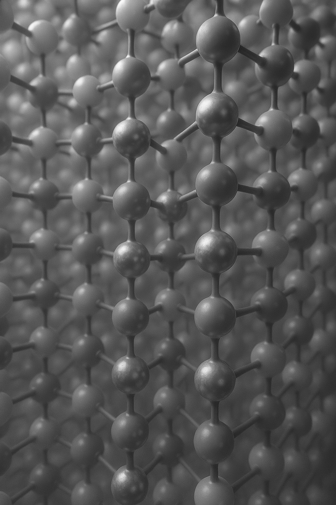
Introduction
to
Electron
Microscopy
Data
Basic Pytorch
Knowledge
.
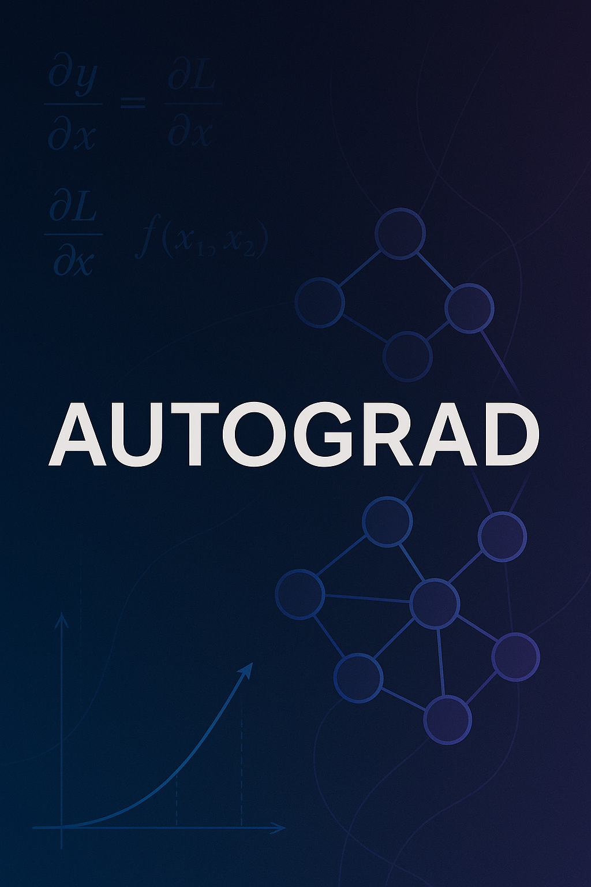
Formalities
- Course Website
- 8-9 lectures
- 1 graded miniproject (40% of the final grade)
- use of AI tools is allowed:
- e.g. Github Copilot (free for students)
- e.g. Cursor (paid)
- use of AI tools is allowed:
- 1 graded exam (60% of the final grade)
Book that covers many topics of the course
Interactive deep learning book with code, math, and discussions
Implemented with PyTorch, NumPy/MXNet, JAX, and TensorFlow
Adopted at 500 universities from 70 countries
We will use the pytorch framework for our coding
STEM capabilities
- Imaging (Z–contrast, light-element, phase-contrast)
- 4D-STEM diffraction & orientation mapping
- Spectroscopies (EELS/XEDS, plasmonics)
- Tomography down to every atom
- Simulation & data-science backbone
STEM operating modes
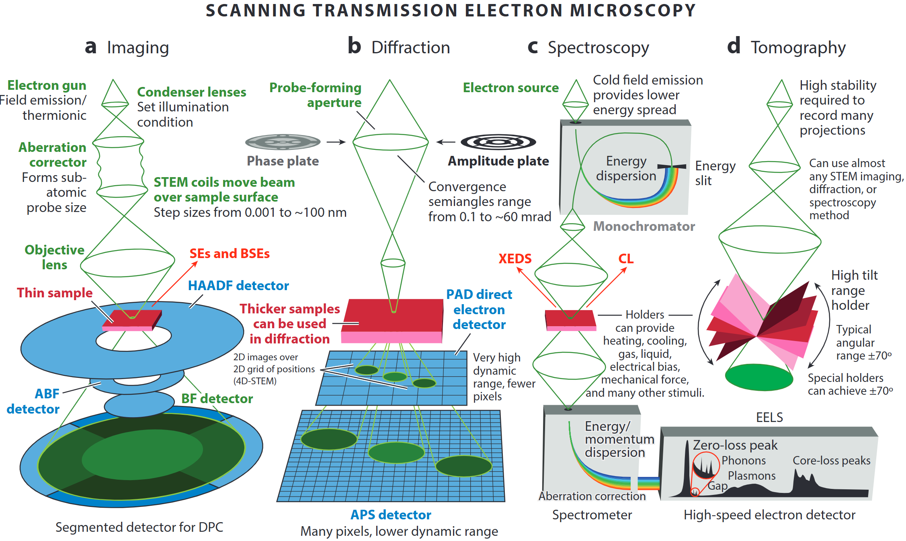
- A modern microscope can switch on the fly between
- incoherent imaging,
- diffraction/4D-STEM,
- EELS / XEDS spectroscopy, and
- tilt-series tomography
- incoherent imaging,
- “A synchrotron in a microscope”: one tool covers Å-to-µm length-scales and meV-to-keV energy-scales.
Ophus (2023)
4DSTEM - Diffraction from a crystalline sample
- Ideally, the diffracted signal is simply a 2D Fourier transform of the projected potential, multiplied by the probe intensity.
- Thus the position and intensity of Bragg disks of each diffraction pattern acts as a fingerprint for the local structure and orientation of the (crystal) sample.
- Interpretation is complicated by multiple / dynamical scattering (thickness effects), overlapping grains, background signals.
video courtesy of C. Ophus, Stanford University
4DSTEM - Diffraction from a amorphous sample
- Ideally, the diffracted signal is simply a 2D Fourier transform of the projected potential, multiplied by the probe intensity.
- The position and shape of amorphous halos of each diffraction pattern acts as a fingerprint for the local structure factor, given by the mean atomic arrangement.
- Interpretation is complicated by multiple / dynamical scattering (thickness effects), overlapping grains, more than crystal diffraction.
video courtesy of C. Ophus, Stanford University
4DSTEM - Design of experiments
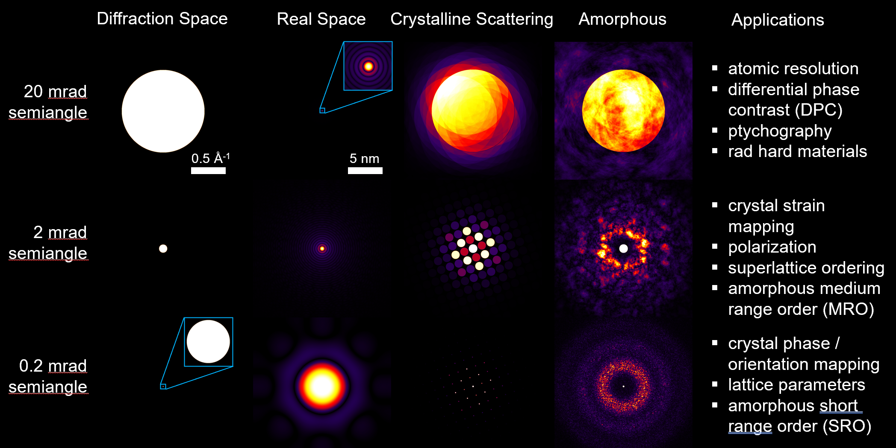
Single-atom Z-contrast
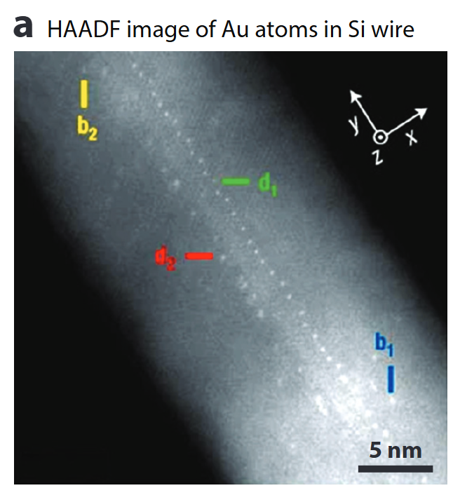
- HAADF collects high-angle incoherent scattering → intensity ∝ Z^1.6 – Z^1.9
- Detects & counts individual heavy atoms, even inside a nanowire.
- Sub-picometre column-position metrology enables strain & segregation studies.
Ophus (2023)
Calibrated composition imaging
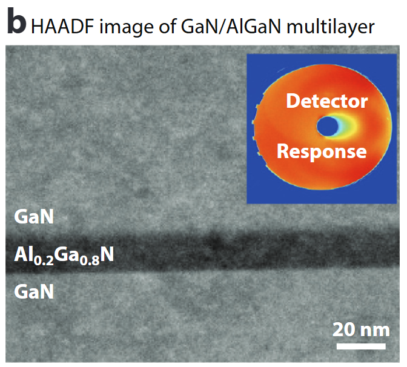
- Absolute detector-response calibration converts HAADF signal to atomic areal density .
- Enables nm-scale composition profiles (here Al₀.₂Ga₀.₈N) & local thickness determination to ≈1 nm.
Ophus (2023)
Seeing light elements – ABF/BF
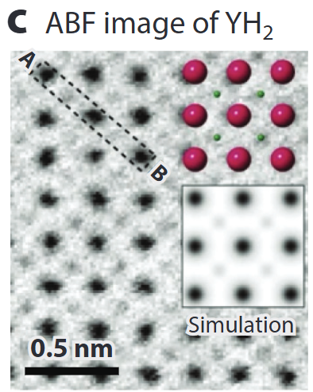
- Annular Bright-Field (ABF) records low-angle transmitted beam: simultaneously heavy & very light atoms (H, Li, O) .
- Quantitative contrast modelling (multislice + frozen phonon) allows thickness & defocus refinement.
Ophus (2023)
Mapping internal fields – DPC
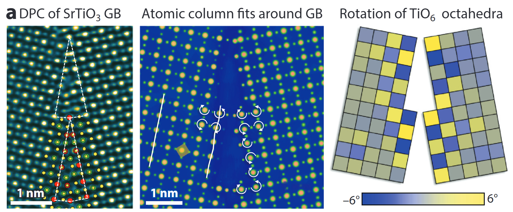
- Segmented / pixelated detectors yield differential phase-contrast (DPC) images.
- Linear to projected electric-field; with sample flip or advanced analysis → magnetic induction too .
- Here: TiO₆ octahedra rotations and GB polarity resolved at the picometre level.
Ophus (2023)
4D-STEM diffraction & orientation mapping
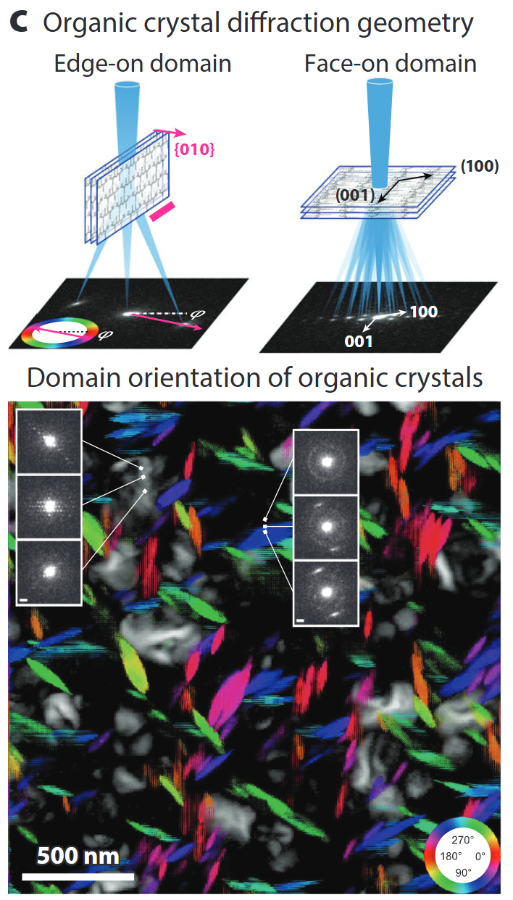
- Pixelated cameras record a CBED pattern at every probe position → 4D data cube.
- From disks, extract local strain, orientation, thickness, even (via ptychography) phases beyond the probe NA.
- Matching experiment to simulation (thermal + inelastic) achieves quantitative thickness/chemistry
Ophus (2023)
Spectroscopy – EELS/XEDS
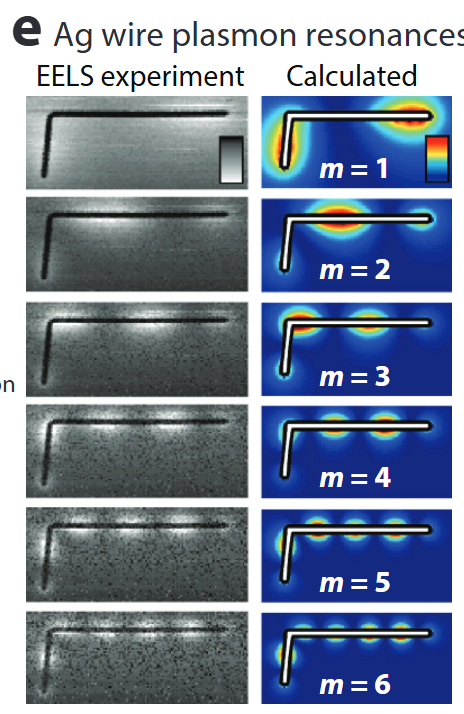
- STEM-EELS resolves plasmons (few eV), phonons (meV) & core-loss fine structure (bonding, oxidation).
- Combined with modelling (BEM, DFT, multiplet) for nanophotonic mode mapping .
- Parallel XEDS gives simultaneous 3-D elemental maps.
Ophus (2023)
Atomic electron tomography
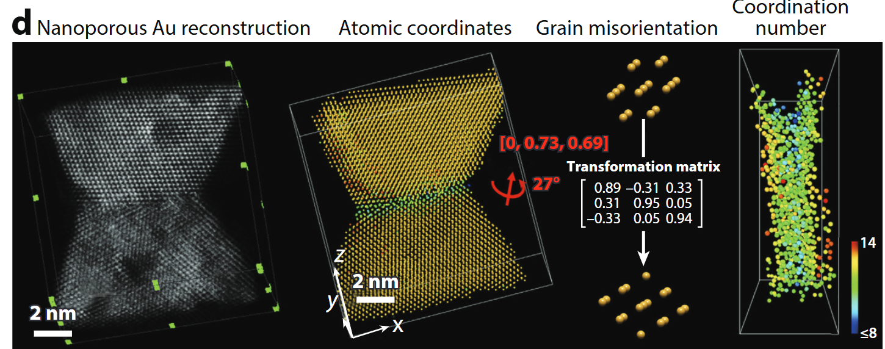
- Tilt-series HAADF/ptychography + iterative reconstruction → 3-D coordinates of every atom in ≤20 nm objects .
- Enables full strain tensors, defect cores, compositional ordering.
Ophus (2023)
Simulation accelerators – PRISM
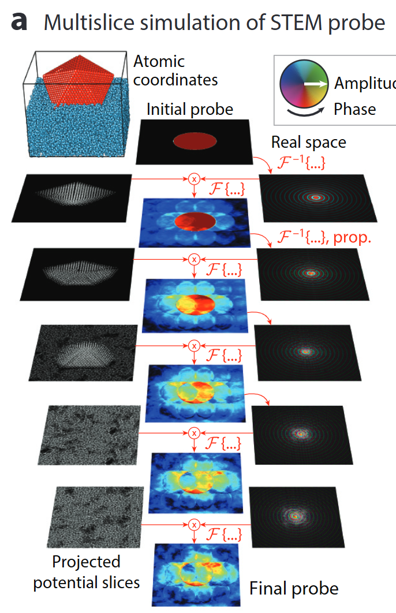
- Quantitative STEM hinges on ab-initio accurate multislice simulations.
- PRISM re-uses plane-wave slices → orders-of-magnitude faster with <1 % error .
- Powers real-time experiment steering & big-data 4D-STEM analysis.
Ophus (2023)
Take-aways
- Modern aberration-corrected STEM delivers Å-resolution imaging, diffraction, spectroscopy & tomography within one instrument.
- Quantification (composition, fields, 3-D structure) now matches the resolution.
- Open-source simulation & Python toolchains are key enablers for truly quantitative materials science.
The data-driven TEM framework (Figure 1)

- Three nested layers turn unknown samples → quantifiable descriptors
- Experiment design
- Feature extraction
- Knowledge discovery
- Experiment design
- Open, interoperable control + AI links all layers into a virtuous cycle.
Spurgeon et al. (2020)
① Experiment design (Fig 1 top)
- GPU-accelerated simulations predict detection limits & dose budgets before the first electron hits the sample.
- ML mines prior-work databases (future) to recommend optimal imaging / spectroscopy modes in real time.
- Outcome: fewer trial-and-error sessions; cost & time savings.
Spurgeon et al. (2020)
② Feature extraction (Fig 1 middle)
- Records complete data streams (e.g. 4D-STEM diffraction cubes) for flexible post-processing
- Combines complementary modalities to overcome projection & damage artefacts.
- Requires automation and low-level access for batch surveys & in-situ studies.
Spurgeon et al. (2020)
③ Knowledge discovery (Fig 1 bottom)
- AI/ML trained on physical models classifies multidimensional signals → structure, bonding, dynamics.
- FAIR data standards and open repositories enable meta-analysis & reproducibility.
- Vision: adaptive microscopy where data choose the next experiment step on-the-fly.
Spurgeon et al. (2020)
Detectors drive the data deluge (Figure 2 a)
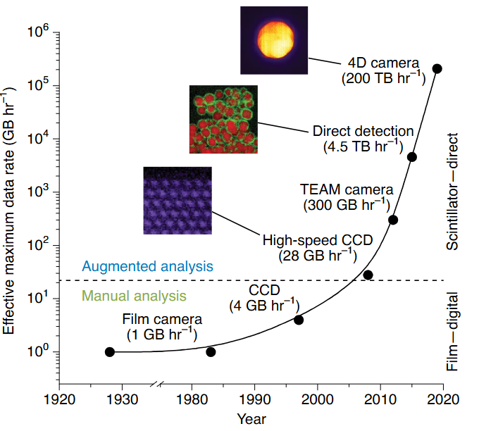
- From film (1 GB h⁻¹) to 4D pixelated cameras (200 TB h⁻¹) – a 10⁸× leap in two decades.
- Computing & storage must scale in lock-step; edge processing at the microscope becomes essential.
Spurgeon et al. (2020)
Workflow evolution (Figure 2 b)

- Manual: choose features “by eye”, serial data, iterative models.
- Augmented: collect many data streams, ML finds features, simulation-based model extraction.
- Integrated experiment control enables closed-loop, crowd-sourced materials discovery.
Spurgeon et al. (2020)
Take-aways
- Modern STEM now spans Å-scale resolution & petabyte-scale data.
- A three-layer, open architecture (design → extraction → discovery) lets AI and simulation turn data into insight.
- Detector advances + FAIR data infrastructure set the stage for truly adaptive, autonomous microscopy.
Course outline
- Intro (13.05.2025)
- Regression and Sensor Fusion (20.05.2025)
- CNNs (27.05.2025)
- Classification, Segmentation, AutoEncoders (03.06.2025)
- Miniproject (3.6. - 24.6.2025) concurrent to lectures
- Project Presentations, GANs (24.06.2025)
- Gaussian Processes Introduction (01.07.2025)
- Gaussian Processes Applications (08.07.2025)
- Advanced Forward Models for Imaging: Tomography, Diffractive Imaging (15.07.2025)
- Repetition (29.07.2025)
Miniproject
- In the miniproject, you will test multiple deep neural network architectures on one of four microscopy-related tasks.
- You should summarize your results in a short presentation (5 minutes + 2 minutes discussion) and deliver a Jupyter Notebook with your code and results.
- The miniproject will be graded and will count as 40% towards your final grade.
Data Manipulation
- Data handling requires two main tasks:
- Data acquisition
- Data processing
- Key concepts for data manipulation:
- \(n\)-dimensional arrays (tensors) are fundamental
- Modern deep learning frameworks use tensor classes:
ndarrayin MXNetTensorin PyTorch and TensorFlow- Similar to NumPy’s
ndarraywith additional features
- Key advantages of tensor classes:
- Support automatic differentiation
- GPU acceleration for numerical computation
- NumPy only runs on CPUs
Getting Started 1
- Import PyTorch:
- Tensor basics:
- Vector: tensor with one axis
- Matrix: tensor with two axes
- \(k^\mathrm{th}\) order tensor: tensor with \(k > 2\) axes
- Tensor creation:
- Use
arange(n)for evenly spaced values (0 to n-1) - Default storage: main memory
- Default computation: CPU-based
- Use
Getting Started 2
x = torch.arange(12, dtype=torch.float32)
x- Tensor elements:
- Each value is an element
- Use
numel()to get total element count - Use
shapeattribute to get dimensions
x.numel()
x.shape- Reshaping tensors:
- Use
reshapeto change shape without changing values - Example: vector (12,) → matrix (3, 4)
- Elements maintain order (row-major)
- Use
X = x.reshape(3, 4)
XGetting Started 3
- Shape inference:
- Use
-1to automatically infer one dimension - Example:
x.reshape(-1, 4)orx.reshape(3, -1) - Given size \(n\) and shape (\(h\), \(w\)), \(w = n/h\)
- Use
- Common tensor initializations:
- Zeros:
torch.zeros((2, 3, 4)) - Ones:
torch.ones((2, 3, 4)) - Random (Gaussian):
torch.randn(3, 4) - Custom values:
torch.tensor([[2, 1, 4, 3], [1, 2, 3, 4], [4, 3, 2, 1]])
- Zeros:
Indexing and Slicing 1
- Access methods:
- Indexing (0-based)
- Negative indexing (from end)
- Slicing (
start:stop) - Single index/slice applies to axis 0
X[-1], X[1:3]- Element modification:
- Use indexing for assignment
- Example:
X[1, 2] = 17
Indexing and Slicing 2
- Multiple element assignment:
- Use indexing on left side of assignment
:selects all elements along an axis- Works for vectors and higher-dimensional tensors
X[:2, :] = 12
XOperations 1
- Elementwise operations:
- Apply scalar operations to each element
- Work with corresponding element pairs
- Support unary operators (e.g., \(e^x\))
- Signature: \(f: \mathbb{R} \rightarrow \mathbb{R}\)
torch.exp(x)Operations 2
- Binary operations:
- Work on pairs of real numbers
- Signature: \(f: \mathbb{R}, \mathbb{R} \rightarrow \mathbb{R}\)
- Common operators:
- Addition (
+) - Subtraction (
-) - Multiplication (
*) - Division (
/) - Exponentiation (
**)
- Addition (
x = torch.tensor([1.0, 2, 4, 8])
y = torch.tensor([2, 2, 2, 2])
x + y, x - y, x * y, x / y, x ** yOperations 3
- Tensor concatenation:
- Use
torch.catwith list of tensors - Specify axis for concatenation
- Shape changes:
- Axis 0: sum of input axis-0 lengths
- Axis 1: sum of input axis-1 lengths
- Use
X = torch.arange(12, dtype=torch.float32).reshape((3,4))
Y = torch.tensor([[2.0, 1, 4, 3], [1, 2, 3, 4], [4, 3, 2, 1]])
torch.cat((X, Y), dim=0), torch.cat((X, Y), dim=1)Operations 4
- Logical operations:
- Create binary tensors via logical statements
- Example:
X == Ycreates tensor of 1s and 0s - Sum operation:
X.sum()reduces to single element
X == Y
X.sum()Broadcasting
- Mechanism for elementwise operations with different shapes:
- Step 1: Expand arrays along length-1 axes
- Step 2: Perform elementwise operation
a = torch.arange(3).reshape((3, 1))
b = torch.arange(2).reshape((1, 2))
a + bSaving Memory 1
- Memory allocation issues:
- Operations create new memory allocations
- Example:
Y = X + Ycreates new memory - Check with
id()function - Undesirable for:
- Frequent parameter updates
- Multiple variable references
Saving Memory 2
- In-place operations:
- Use slice notation:
Y[:] = <expression> - Use
zeros_likefor initialization - Use
X[:] = X + YorX += Yfor efficiency
- Use slice notation:
Z = torch.zeros_like(Y)
Z[:] = X + Y
X += YConversion to Other Python Objects
- NumPy conversion:
X.numpy(): Tensor → NumPy arraytorch.from_numpy(A): NumPy array → Tensor- Shared memory between conversions
- Scalar conversion:
- Use
item()or built-in functions - Example:
float(a),int(a)
- Use
Summary
- Tensor class features:
- Data storage and manipulation
- Construction routines
- Indexing and slicing
- Basic mathematics
- Broadcasting
- Memory-efficient operations
- Python object conversion
Exercises
- Experiment with different conditional statements:
- Try
X < YandX > Y - Observe resulting tensor types
- Try
- Test broadcasting with 3D tensors:
- Try different shapes
- Verify results match expectations
Automatic Differentiation
- Key points about derivatives in deep learning:
- Essential for optimization algorithms
- Used in training deep networks
- Manual calculation is:
- Tedious
- Error-prone
- More difficult with complex models
- Modern deep learning frameworks provide:
- Automatic differentiation (autograd)
- Computational graph tracking
- Backpropagation implementation
- Works backwards through graph
- Applies chain rule
- Efficient gradient computation
import torchA Simple Function
- Goal: Differentiate \(y = 2\mathbf{x}^{\top}\mathbf{x}\) with respect to \(\mathbf{x}\)
- Initial setup:
x = torch.arange(4.0)
x- Gradient storage considerations:
- Need space to store gradients
- Avoid new memory allocation for each derivative
- Important because:
- Deep learning requires many derivative computations
- Same parameters used repeatedly
- Memory efficiency crucial
- Gradient shape matches input vector shape
x.requires_grad_(True)
x.grad # The gradient is None by default- Function calculation:
y = 2 * torch.dot(x, x)
y- Gradient computation:
- Use
backward()method - Access via
gradattribute - Expected result: \(4\mathbf{x}\)
- Use
y.backward()
x.grad
x.grad == 4 * x- Important note about gradient accumulation:
- PyTorch adds new gradients to existing ones
- Useful for optimizing sum of multiple objectives
- Reset with
x.grad.zero_()
x.grad.zero_() # Reset the gradient
y = x.sum()
y.backward()
x.gradBackward for Non-Scalar Variables
- Vector derivatives:
- Natural interpretation: Jacobian matrix
- Contains partial derivatives of each component
- Higher-order tensors for higher-order inputs
- Common use case:
- Sum gradients of each component
- Often needed for batch processing
- Results in vector matching input shape
- PyTorch implementation:
- Requires explicit reduction to scalar
- Uses vector \(\mathbf{v}\) for computation
- Computes \(\mathbf{v}^\top \partial_{\mathbf{x}} \mathbf{y}\)
- Argument named
gradientfor historical reasons
x.grad.zero_()
y = x * x
y.backward(gradient=torch.ones(len(y))) # Faster: y.sum().backward()
x.gradDetaching Computation
- Purpose: Move calculations outside computational graph
- Use cases:
- Create auxiliary terms without gradients
- Focus on direct influence of variables
- Control gradient flow
- Example scenario:
z = x * yandy = x * x- Want direct influence of
xonz - Solution: Detach
yto createu - Results in:
- Same value as
y - No gradient flow through
u - Direct computation of
z = x * u
- Same value as
x.grad.zero_()
y = x * x
u = y.detach()
z = u * x
z.sum().backward()
x.grad == u- Important notes:
- Detaches ancestors from graph
- Original graph for
ypersists - Can still compute gradients for
y
x.grad.zero_()
y.sum().backward()
x.grad == 2 * xGradients and Python Control Flow
- Key feature: Works with dynamic computation paths
- Supports:
- Conditional statements
- Loops
- Arbitrary function calls
- Variable-dependent control flow
- Example function:
def f(a):
b = a * 2
while b.norm() < 1000:
b = b * 2
if b.sum() > 0:
c = b
else:
c = 100 * b
return c- Implementation details:
- Graph built during execution
- Specific path for each input
- Supports backward pass after execution
- Works with linear functions and piecewise definitions
a = torch.randn(size=(), requires_grad=True)
d = f(a)
d.backward()
a.grad == d / a- Real-world applications:
- Text processing with variable lengths
- Dynamic model architectures
- Statistical modeling
- Impossible to compute gradients a priori
Discussion
- Impact of automatic differentiation:
- Massive productivity boost
- Enables complex model design
- Frees practitioners for higher-level tasks
- Technical aspects:
- Optimization of autograd libraries
- Compiler and graph manipulation tools
- Memory efficiency
- Computational efficiency
- Basic workflow:
- Attach gradients to target variables
- Record target value computation
- Execute backpropagation
- Access resulting gradient
Exercises
- Backpropagation behavior:
- Run function twice
- Observe and explain results
- Control flow analysis:
- Change
ato vector/matrix - Analyze non-scalar results
- Explain computation changes
- Change
- Automatic differentiation practice:
- Plot \(f(x) = \sin(x)\)
- Plot derivative using autograd
- Avoid using known derivative formula
- Chain rule exercise:
- Function: \(f(x) = ((\log x^2) \cdot \sin x) + x^{-1}\)
- Create dependency graph
- Compute derivative using chain rule
- Map terms to dependency graph
- Let \(f(x) = ((\log x^2) \cdot \sin x) + x^{-1}\). Write out a dependency graph tracing results from \(x\) to \(f(x)\).
- Use the chain rule to compute the derivative \(\frac{df}{dx}\) of the aforementioned function, placing each term on the dependency graph that you constructed previously.
References
Ophus, Colin. 2023. “Quantitative Scanning Transmission Electron Microscopy for Materials Science: Imaging, Diffraction, Spectroscopy, and Tomography.” Annual Review of Materials Research 53 (1): 105–41.
Spurgeon, Steven R., Colin Ophus, Lewys Jones, Amanda Petford-Long, Sergei V. Kalinin, Matthew J. Olszta, Rafal E. Dunin-Borkowski, et al. 2020. “Towards Data-Driven Next-Generation Transmission Electron Microscopy.” Nature Materials, October, 1–6. https://doi.org/10/ghhtjq.